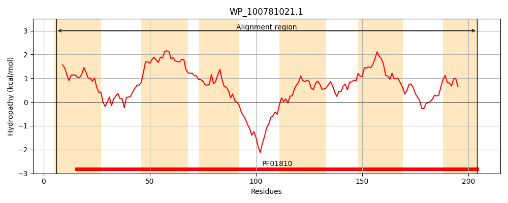
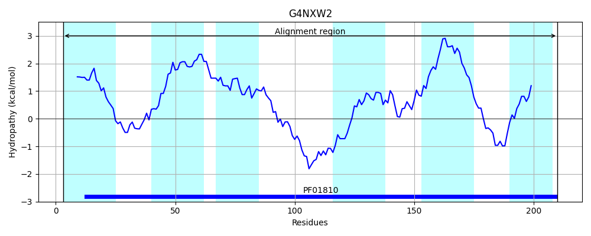
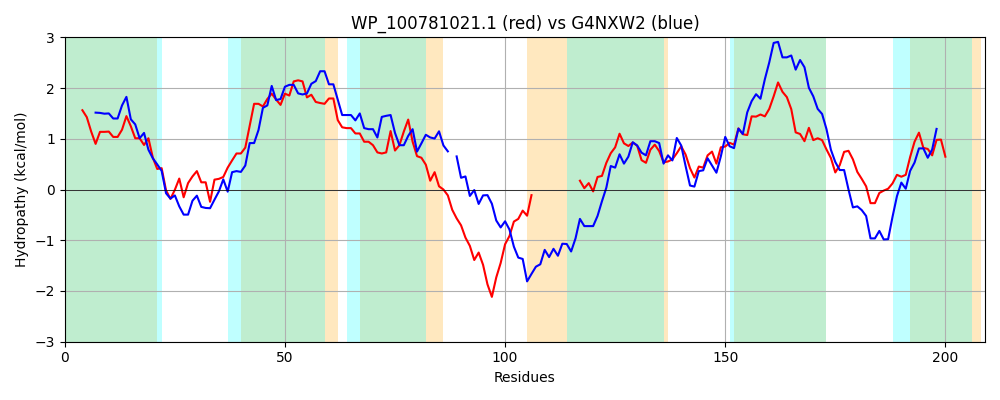

Hit Accession: G4NXW2
Hit TCID: 2.A.76.1.8
Hit Description: gnl|BL_ORD_ID|4729 gnl|TC-DB|G4NXW2|2.A.76.1.8 YrhP OS=Bacillus subtilis subsp. spizizenii (strain TU-B-10) GN=GYO_2947 PE=4 SV=1
Mach Len: 209
e:0.000000
Query TMS Count : 6
Hit TMS Count: 6
TMS-Overlap Score: 4.950000
Predicted Substrates:CHEBI:2642;alpha-amino acid
BLAST Alignment:
Score: 248 , Bit scores: 100 bits, E-value: 2.4e-26, Alignment length: 209, Percentage identity: 29
Query: 6 SLLAYTLAATLLTLTPGLDTALILRTATAEGGRKALHAALGIDLGCFIWGALVAFGLGALLAVSELAYTLLKWCGAGYLCWLGIQLLLRPRQQFNPNPTESDSTSNW----------FLCGMLGNVLNPKMGVFYVSFLPQFIPAGHSPINWTFLLVTIHVLIGTLWSLTLITATRYAAGILKKPAVVKWMDRTTGCLFLIFAAKLAMS 204
SLL Y A ++ + PG DT L+++ G + + LG+ G W + GL ++A S +T +K+ GA YL +LGI+ + F+ + +S +T+ F+ G L N+LNPK + YV+ +PQFI + +L +I L+ LW L L+ +A +K K + TG + + F K +S
Sbjct: 3 SLLTYIPIAAMMVILPGADTMLVMKNTLRYGAKAGRYNILGLATGLSFWTVIAILGLSVVIAKSVFLFTTIKYLGAAYLIYLGIKSFF-AKSMFSIDDMQSQATTTGNSPKRYYKTSFMQGSLSNILNPKTVLVYVTIMPQFINLKGNINQQLIILASILTLLAVLWFLFLVYIIDFAKKWMKNSKFQKVFQKITGMILVGFGIKTGLS 210 | Protein Hydropathy Plots: |
|---|
|  |  |
Pairwise Alignment-Hydropathy Plot:
|
|---|
|  |